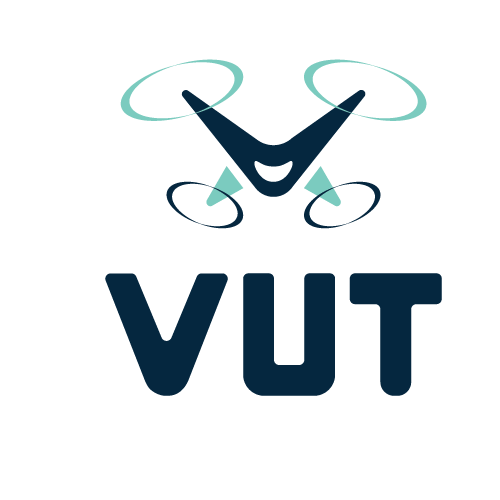
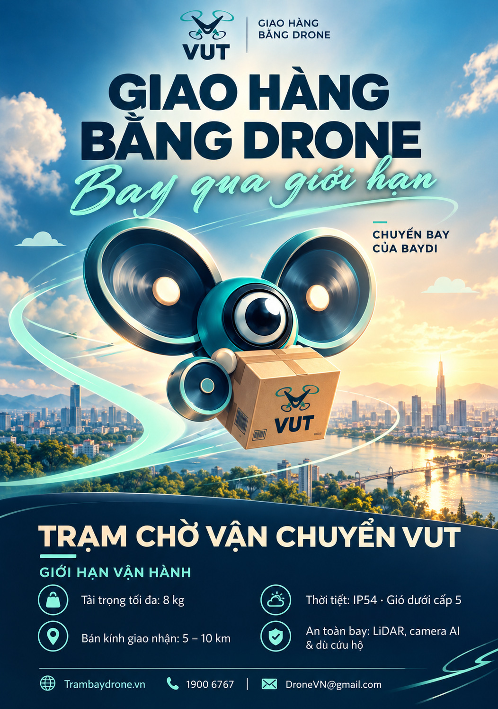

Thuốc & vật tư
Định hướng kết nối các điểm tiếp nhận y tế, với yêu cầu riêng về bảo quản và kiểm soát hàng hóa.

DRONE DELIVERYVUT / TƯƠNG LAI CỦA GIAO NHẬN
Một hướng đi mới cho những đơn hàng nhỏ cần đến nơi nhanh. Kết nối các trạm giao nhận bằng drone, mở thêm một hành trình phía trên thành phố.
Dự án thiết kế thương hiệu · Trải nghiệm mô phỏng

THE NEXT WAY TO DELIVER01 / Ý TƯỞNG THƯƠNG HIỆU
VUT là ý tưởng dịch vụ vận chuyển nhanh bằng drone tại Việt Nam, hướng đến những kiện hàng nhỏ, nhẹ và cần giao gấp.
Mô hình khởi đầu đề xuất sử dụng các trạm drone cố định: hàng được tiếp nhận, kiểm tra và đưa vào chuyến bay giữa các điểm giao nhận. Con người phụ trách kiểm soát đơn và bàn giao tại trạm.
Các thông số thuộc concept đồ án, cần kiểm chứng kỹ thuật và điều kiện vận hành trước khi triển khai.
02 / DỊCH VỤ ĐỊNH HƯỚNG
Ưu tiên đơn hàng có giá trị thời gian.
Mỗi chuyến bay bắt đầu từ một nhu cầu cụ thể.
Định hướng kết nối các điểm tiếp nhận y tế, với yêu cầu riêng về bảo quản và kiểm soát hàng hóa.
Giấy tờ và tài liệu nhỏ gọn cần được chuyển giữa các trạm trong thời gian ngắn.
Phụ kiện và linh kiện được đóng gói bảo vệ, phù hợp với giới hạn tải trọng đề xuất.
Đồ dùng thiết yếu và đơn hàng nhỏ, được kiểm tra độ phù hợp trước khi tiếp nhận.
03 / HÀNH TRÌNH GIAO NHẬN
Chọn điểm gửi, điểm nhận và khai báo loại hàng, khối lượng.
Tiếp nhận hàng, kiểm tra điều kiện vận chuyển và đóng gói.
Chuyến bay giữa các trạm theo tuyến được kiểm soát.
Người nhận xác nhận thông tin và nhận hàng tại trạm đích.
04 / TRẢI NGHIỆM TƯƠNG TÁC
Thử tạo đơn và theo dõi hành trình VUT ngay trên website.
Tạo đơn ở tab bên cạnh để có mã theo dõi.
05 / HỆ THỐNG NHẬN DIỆN
Biểu tượng drone kết hợp chữ V tạo liên tưởng đến chuyển động và tinh thần vươn lên. Xanh navy mang cảm giác chắc chắn; xanh mint gợi sự linh hoạt và công nghệ.
06 / CÂU HỎI THƯỜNG GẶP
Website này giới thiệu concept thuộc dự án thiết kế hệ thống nhận diện thương hiệu. Các chức năng đặt và theo dõi đơn là mô phỏng.
Mô hình đề xuất ở giai đoạn đầu vận chuyển giữa các trạm cố định. Người gửi và người nhận bàn giao hàng tại trạm.
Không. Tải trọng 8 kg và bán kính 5–10 km là thông số đề xuất trong đồ án. Triển khai thực tế cần kiểm chứng công nghệ, an toàn và điều kiện vận hành.
Trong bộ nhớ cục bộ của trình duyệt hiện tại. Website không chuyển thông tin này đến hệ thống tiếp nhận đơn hàng.
VUT DRONE DELIVERY